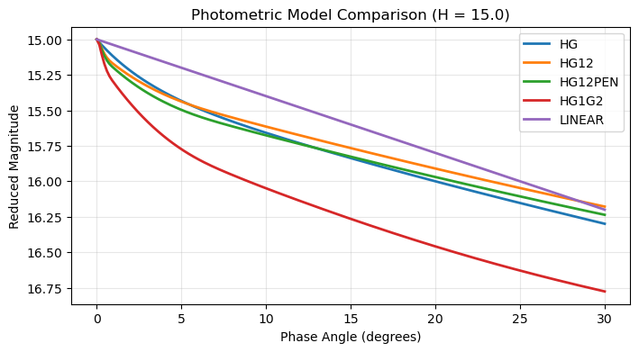
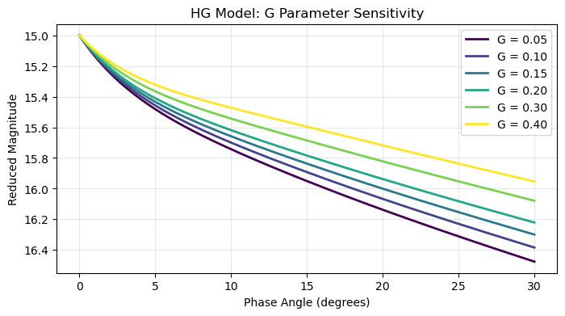
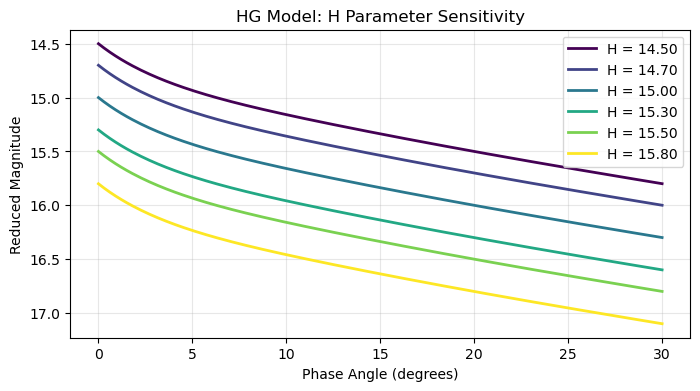
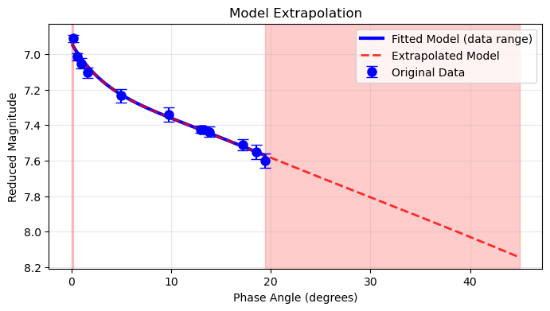

Generate Models¶
Overview¶
The generateModel() method creates magnitude values from model parameters, enabling:
- Smooth curves for plotting fitted models
- Synthetic datasets for testing
- Theoretical phase curves from literature values
- Model extrapolation beyond data range
Method Signature¶
generateModel(model, degrees=None)
Parameters: - model (str): Model name ("HG", "HG1G2", "HG12", "HG12PEN", "LINEAR") - degrees (array-like, optional): Phase angles. If None, uses object's angle array
Returns: - Magnitude values (float or numpy array)
Basic Usage¶
From Fitted Parameters¶
# After fitting a model
pc.fitModel(model="HG", method="trust-constr")
# Generate at original angles
model_mags = pc.generateModel(model="HG")
print("Model at original angles:", model_mags)
# Generate at new angles
new_angles = np.array([1, 5, 10, 15, 20, 25, 30])
extended_mags = pc.generateModel(model="HG", degrees=new_angles)
print("Model at extended angles:", extended_mags)
Model at original angles: [6.95322579 6.99455516 7.02274888 7.06830039 7.22616926 7.35526372
7.42522086 7.43249424 7.44442226 7.51929385 7.54999792 7.56988952]
Model at extended angles: [7.02428427 7.22788627 7.36022689 7.47084845 7.58344709 7.6956334
7.80641673]
Single Point Generation¶
# Generate magnitude at specific angle
mag_at_10deg = pc.generateModel(model="HG", degrees=10.0)
print(f"Magnitude at 10°: {mag_at_10deg:.3f}")
# Generate at zero phase (absolute magnitude H)
h_magnitude = pc.generateModel(model="HG", degrees=0.0)
print(f"H parameter: {pc.params['H']:.3f}")
print(f"Magnitude at 0°: {h_magnitude:.3f}") # Should match H
Magnitude at 10°: 7.360
H parameter: 6.937
Magnitude at 0°: 6.937
Theoretical Models¶
From Literature Parameters¶
def create_theoretical_model(model, phase_range, **params):
"""Create theoretical phase curve from literature parameters."""
angles = np.linspace(phase_range[0], phase_range[1], 100)
pc = PhaseCurve(angle=angles, **params)
magnitudes = pc.generateModel(model=model)
return angles, magnitudes
# Example: Create HG model from known parameters
angles, mags = create_theoretical_model(
model="HG",
phase_range=(0, 30),
H=15.24,
G=0.15
)
print(f"Generated {len(angles)} points from 0° to 30°")
Generated 100 points from 0° to 30°
Standard Asteroid Types¶
def generate_standard_types():
"""Generate phase curves for standard asteroid taxonomic types."""
# Typical slope parameters (G) per type
standard_types = {
'C-type': {'G': 0.15}, # Carbonaceous (dark, shallow slope)
'S-type': {'G': 0.25}, # Silicaceous
'M-type': {'G': 0.20}, # Metallic
'V-type': {'G': 0.30} # Basaltic (steeper slope)
}
# Use a single reference H (absolute magnitude)
H_ref = 12.0
phase_angles = np.linspace(0, 30, 150)
models = {}
for ast_type, params in standard_types.items():
pc = PhaseCurve(angle=phase_angles, H=H_ref, **params)
magnitudes = pc.generateModel(model="HG")
models[ast_type] = {
'angles': phase_angles,
'magnitudes': magnitudes,
'params': {'H': H_ref, **params}
}
return models
# Generate and plot
import matplotlib.pyplot as plt
models = generate_standard_types()
plt.figure(figsize=(8, 4))
for ast_type, data in models.items():
plt.plot(data['angles'], data['magnitudes'],
label=f"{ast_type} (G={data['params']['G']})")
plt.gca().invert_yaxis()
plt.xlabel('Phase Angle (degrees)')
plt.ylabel('Reduced Magnitude')
plt.title('Standard Asteroid Type Phase Curves (HG model)')
plt.legend()
plt.show()
Model Comparisons¶
Compare Different Models¶
def compare_photometric_models(h_value=15.0):
"""Compare different models with same H value."""
model_params = {
'HG': {'H': h_value, 'G': 0.15},
'HG12': {'H': h_value, 'G12': 0.30},
'HG12PEN': {'H': h_value, 'G12': 0.30},
'HG1G2': {'H': h_value, 'G1': 0.30, 'G2': 0.15},
'LINEAR': {'H': h_value, 'beta': 0.04}
}
phase_angles = np.linspace(0, 30, 200)
plt.figure(figsize=(8, 4))
for model, params in model_params.items():
pc = PhaseCurve(angle=phase_angles, **params)
magnitudes = pc.generateModel(model=model)
plt.plot(phase_angles, magnitudes, linewidth=2, label=model)
plt.gca().invert_yaxis()
plt.xlabel('Phase Angle (degrees)')
plt.ylabel('Reduced Magnitude')
plt.title(f'Photometric Model Comparison (H = {h_value})')
plt.legend()
plt.grid(True, alpha=0.3)
plt.show()
# Usage
compare_photometric_models(h_value=15.0)

Parameter Sensitivity¶
def parameter_sensitivity(model="HG", base_params=None, vary_param='G'):
"""Analyze sensitivity to parameter variations."""
if base_params is None:
base_params = {'H': 15.0, 'G': 0.15}
# Define parameter variations
if vary_param == 'G':
variations = [0.05, 0.10, 0.15, 0.20, 0.30, 0.40]
elif vary_param == 'H':
variations = [14.5, 14.7, 15.0, 15.3, 15.5, 15.8]
else:
variations = np.linspace(0.1, 0.4, 6)
phase_angles = np.linspace(0, 30, 200)
plt.figure(figsize=(8, 4))
for i, var_value in enumerate(variations):
# Create parameter set
params = base_params.copy()
params[vary_param] = var_value
# Generate model
pc = PhaseCurve(angle=phase_angles, **params)
magnitudes = pc.generateModel(model=model)
# Plot with color gradient
color = plt.cm.viridis(i / (len(variations) - 1))
plt.plot(phase_angles, magnitudes, color=color, linewidth=2,
label=f'{vary_param} = {var_value:.2f}')
plt.gca().invert_yaxis()
plt.xlabel('Phase Angle (degrees)')
plt.ylabel('Reduced Magnitude')
plt.title(f'{model} Model: {vary_param} Parameter Sensitivity')
plt.legend()
plt.grid(True, alpha=0.3)
plt.show()
# Usage examples
parameter_sensitivity(model="HG", vary_param='G')
parameter_sensitivity(model="HG", vary_param='H')


Synthetic Datasets¶
Generate Test Data¶
def generate_synthetic_dataset(model, params, phase_angles, noise_level=0.02, seed=None):
"""Generate synthetic observational dataset with noise."""
if seed is not None:
np.random.seed(seed)
# Generate perfect model
pc = PhaseCurve(angle=phase_angles, **params)
true_magnitudes = pc.generateModel(model=model)
# Add observational noise
noise = np.random.normal(0, noise_level, len(phase_angles))
observed_magnitudes = true_magnitudes + noise
# Create realistic uncertainties
uncertainties = np.full_like(phase_angles, noise_level)
uncertainties *= np.random.uniform(0.8, 1.2, len(phase_angles))
return {
'angles': phase_angles,
'magnitudes': observed_magnitudes,
'uncertainties': uncertainties,
'true_magnitudes': true_magnitudes,
'true_params': params
}
# Generate test dataset
true_params = {'H': 15.234, 'G': 0.187}
test_angles = np.array([3., 7., 11., 16., 21., 26.])
synthetic_data = generate_synthetic_dataset(
model="HG",
params=true_params,
phase_angles=test_angles,
noise_level=0.03,
seed=42
)
print("Synthetic dataset generated:")
print(f"True H: {true_params['H']:.3f}")
print(f"True G: {true_params['G']:.3f}")
print(f"Noise level: {0.03:.3f} mag")
Synthetic dataset generated:
True H: 15.234
True G: 0.187
Noise level: 0.030 mag
Parameter Recovery Testing¶
def test_parameter_recovery(model, true_params, n_datasets=50):
"""Test parameter recovery accuracy with synthetic data."""
test_angles = np.array([5, 10, 15, 20, 25])
recovered_params = []
for i in range(n_datasets):
# Generate synthetic dataset
synthetic = generate_synthetic_dataset(
model=model,
params=true_params,
phase_angles=test_angles,
noise_level=0.02,
seed=i
)
# Attempt to fit
try:
pc = PhaseCurve(
angle=synthetic['angles'],
magnitude=synthetic['magnitudes'],
magnitude_unc=synthetic['uncertainties']
)
pc.fitModel(model=model, method="trust-constr")
recovered_params.append(pc.params.copy())
except:
continue
# Analyze results
if not recovered_params:
print("No successful fits!")
return
print(f"Parameter Recovery Test ({model} model):")
print(f"Successful fits: {len(recovered_params)}/{n_datasets}")
print()
for param in true_params:
recovered_values = [rp[param] for rp in recovered_params]
true_value = true_params[param]
mean_recovered = np.mean(recovered_values)
std_recovered = np.std(recovered_values)
bias = mean_recovered - true_value
print(f"{param}:")
print(f" True value: {true_value:.4f}")
print(f" Mean recovered: {mean_recovered:.4f}")
print(f" Standard deviation: {std_recovered:.4f}")
print(f" Bias: {bias:.4f}")
print()
# Test recovery
true_params = {'H': 15.234, 'G': 0.187}
test_parameter_recovery("HG", true_params)
Parameter Recovery Test (HG model):
Successful fits: 50/50
H:
True value: 15.2340
Mean recovered: 15.2441
Standard deviation: 0.0233
Bias: 0.0101
G:
True value: 0.1870
Mean recovered: 0.1982
Standard deviation: 0.0248
Bias: 0.0112
Model Extrapolation¶
Extend Beyond Data Range¶
def extrapolate_model(pc, extended_range=(0, 60)):
"""Extrapolate fitted model to extended phase angles."""
if not pc.fitting_status:
print("Fit a model first")
return
original_range = (np.min(pc.angle), np.max(pc.angle))
extended_angles = np.linspace(extended_range[0], extended_range[1], 300)
extended_mags = pc.generateModel(model=pc.fitting_model, degrees=extended_angles)
plt.figure(figsize=(8, 4))
# Plot original data
plt.errorbar(pc.angle, pc.magnitude, yerr=pc.magnitude_unc,
fmt='o', capsize=5, markersize=8, color='blue',
label='Original Data', zorder=10)
# Plot fitted model in original range
original_angles = np.linspace(original_range[0], original_range[1], 100)
original_model = pc.generateModel(model=pc.fitting_model, degrees=original_angles)
plt.plot(original_angles, original_model, 'b-', linewidth=3,
label='Fitted Model (data range)')
# Plot extrapolated model
plt.plot(extended_angles, extended_mags, 'r--', linewidth=2,
label='Extrapolated Model', alpha=0.8)
# Highlight extrapolation regions
if extended_range[0] < original_range[0]:
plt.axvspan(extended_range[0], original_range[0], alpha=0.2, color='red')
if extended_range[1] > original_range[1]:
plt.axvspan(original_range[1], extended_range[1], alpha=0.2, color='red')
plt.gca().invert_yaxis()
plt.xlabel('Phase Angle (degrees)')
plt.ylabel('Reduced Magnitude')
plt.title('Model Extrapolation')
plt.legend()
plt.grid(True, alpha=0.3)
plt.show()
return extended_angles, extended_mags
# Usage after fitting
extended_angles, extended_mags = extrapolate_model(pc, extended_range=(0, 45))
